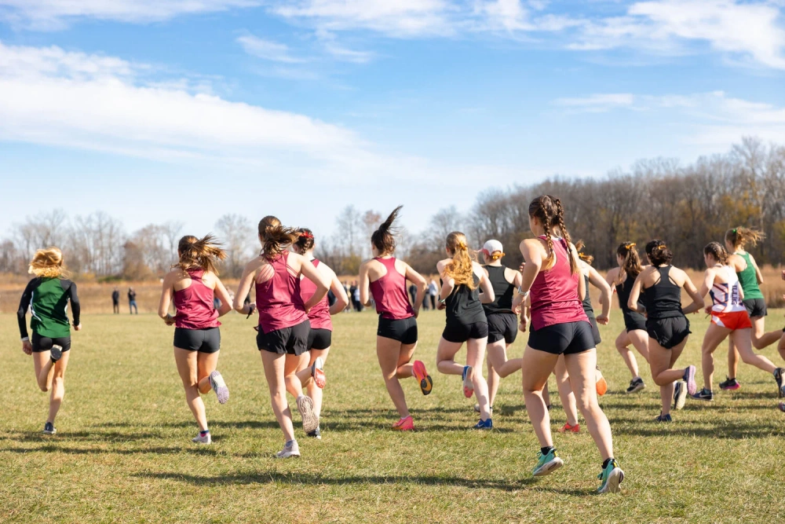
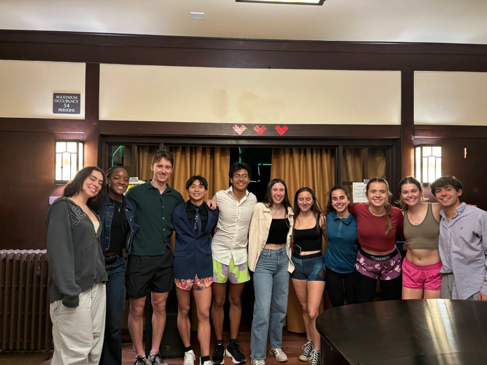
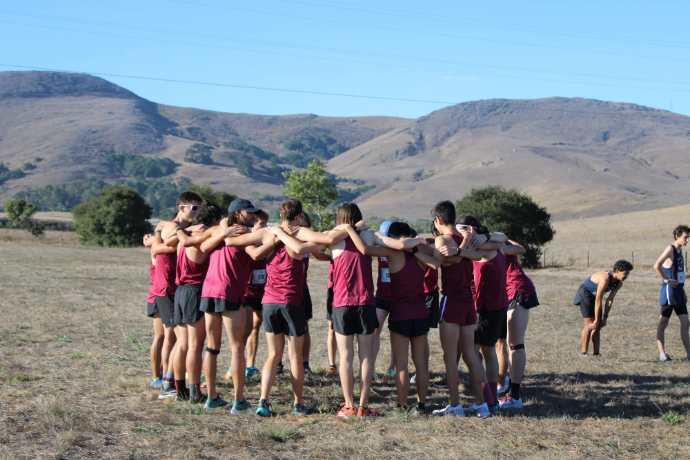
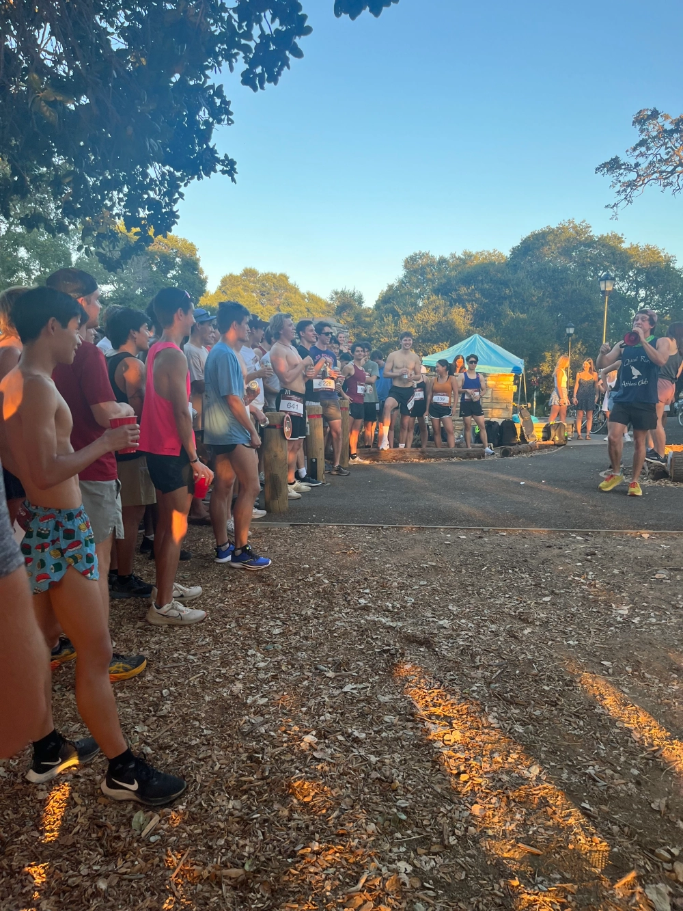
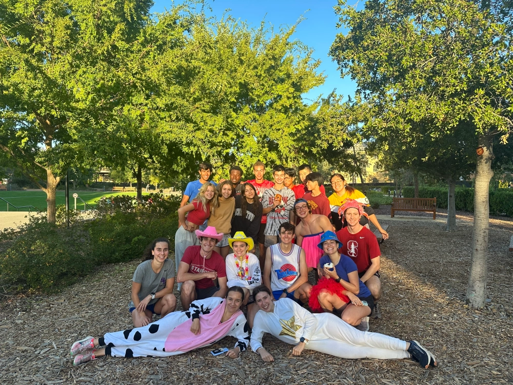
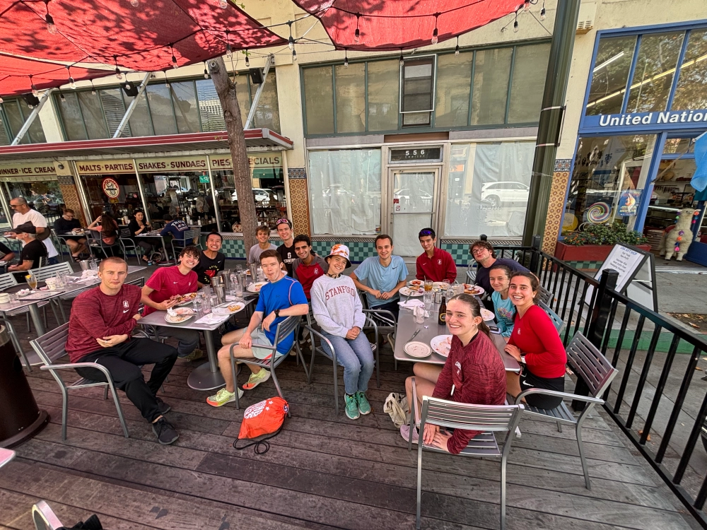

WE DO IT ALL
The Stanford Running Club is a means for all of Stanford to come together and share a love of running. It is low pressure and flexible, with members showing up when they have the time and often planning runs of their own. We have many levels of runners, from those who have never run before to marathoners and ex-Stanford runners. We have undergraduates, graduate students, professors, and even visiting high schoolers. Pooling all of Stanford's runners, we guarantee that there'll always be someone with whom you can run. If you come, you will be entering an environment that inspires running and that will keep you fit. So, whether you are looking to stay in shape, find a team, or just have a relaxing activity, come on out and join us for a run.





